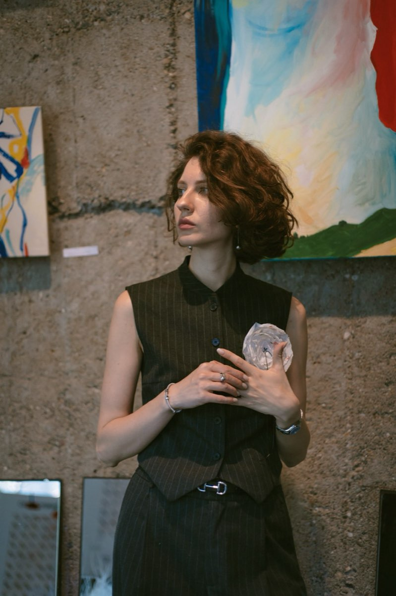
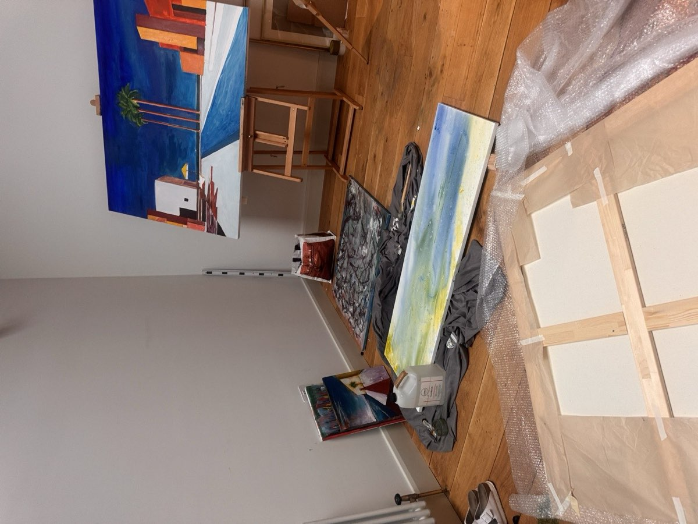
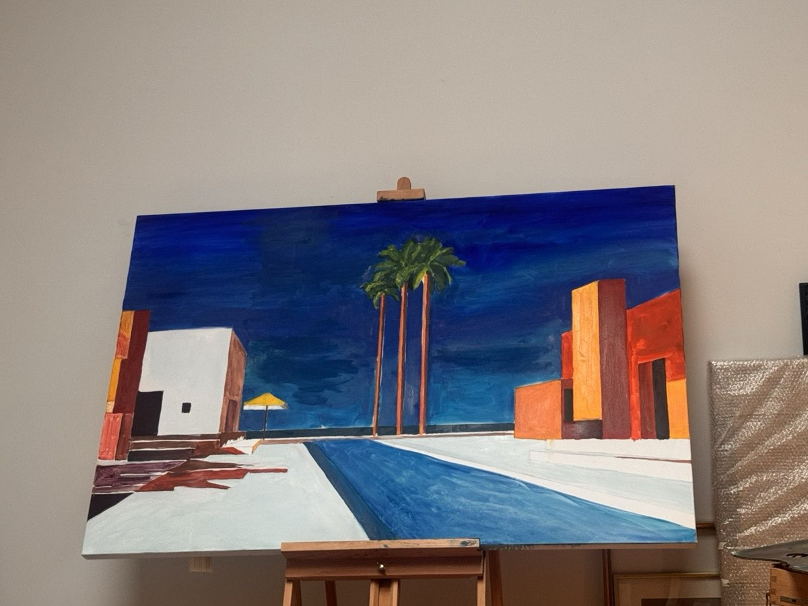
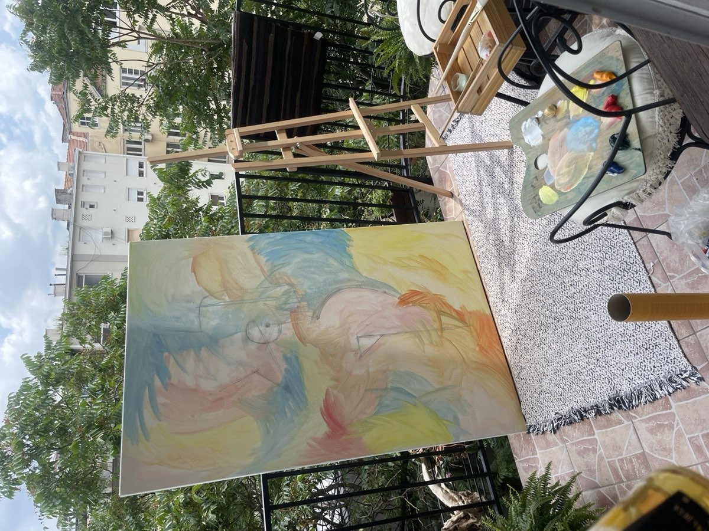
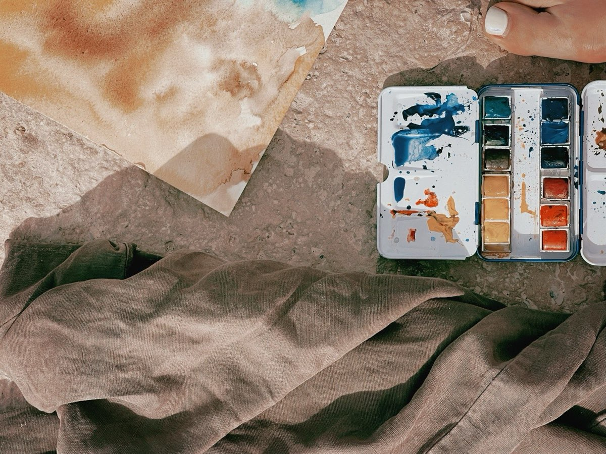
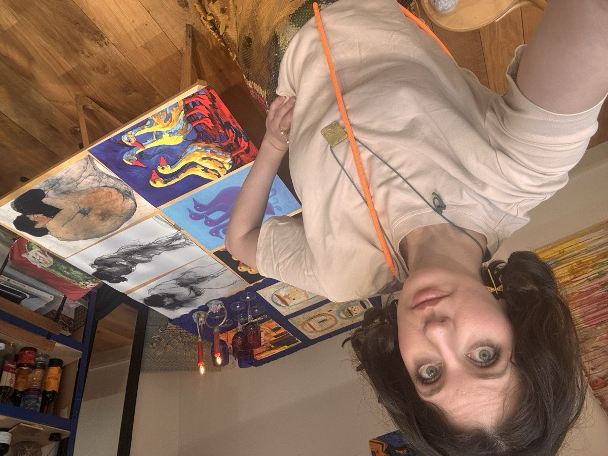

About
Anna Katsur (b. 1991, Almaty) is a painter based in London. She works in oil, painting invented places with a single small figure in them.
Her current series, Nothing Significant Happens Here (2021–2026), is about waiting and uncertainty. She has also worked with algorithmic image processes and moving image.
Katsur studied conceptual art and design at the Moscow State University of Humanities and at the Higher School of Graphic Design, Moscow. Her work has been shown in the solo exhibition Illusory in Belgrade (2023), at The Wrong Biennale (2023) and in group exhibitions in Yerevan, Istanbul and London, most recently The Geography of Becoming at Hackney Downs Studios (2026).





The place is the sitter.
I paint pauses: the time between leaving one place and arriving in another. I know that time well from years of moving between countries, languages and homes.
Oil is the foundation of my practice. I am interested in how colour can feel physical, and how a still image can hold tension rather than calm.
In other projects I have tested painting against other systems: written descriptions of images that did not yet exist, and algorithms that merge two paintings into a third. Each time the question is the same: what of the human hand survives?
In my paintings the landscape does what a face does in a portrait.
Exhibitions
- 2026The Geography of Becoming, Hackney Downs Studios, London
- 2026Soho Open, GPS Gallery, Soho, London
- 202677th Annual Summer Exhibition, Chelsea Art Society, London
- 2026Huge Gallery, Huge Gallery, London
- 2026The Route Forward, with Inessa Garder, Hackney Downs Studios, London
- 2024Who Am I?, international exhibition, Hackney Wick, London
- 2023The Wrong Biennale, Barcelona
- 2023Contemporary Artists, FuterGo Summit, Istanbul
- 2023Awakening, Yerevan
- 2023Illusory, Belgrade
- 2019Installation for the Golden Mask theatre season, Moscow
- 2010Art of the Future, Zelenograd Cultural Centre, Moscow
- 2009New Watercolour, Kirov City Library, Kirov
Education
- 2014–16Higher School of Graphic Design, Moscow — Art and Design
- 2010–14Moscow State University of Humanities — Conceptual Art and Design
- 2006–10Vyatka Art College — Artist-Educator
Selected projects
- 2026Held in Motion — single-channel video
- 2025Geese — series of three paintings
- 2023–25Painting and the algorithm — AI-merged images from paintings
- 2023Out of Register — single-channel video
- 2022–23Illusory — series of five paintings
Press
- 2023“In Search of the Sacred Thread”London Cult
- 2023“Exploring Ashtarak Through Modern Art”Panorama.am
For exhibitions, curatorial projects and professional enquiries:
aakatsur@gmail.com